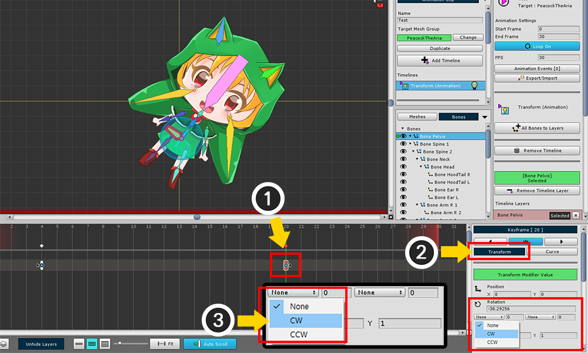

AnyPortrait > Manual > Rotate over 360 degrees
Rotate over 360 degrees
1.0.0

When you create a keyframe animation, you often "rotate" objects.
To rotate, you can create two keyframes and animate them as shown in the image above.
If you want to create an animation with a rotation angle of 360 degrees or higher, this is not possible with the usual method.
This is because all angles are defined within 360 degrees.
This page describes the feature that corrects the angle when you rotate more than 360 degrees provided by AnyPortrait.

When you play a keyframe animation, it usually rotates to a "small angle of the interval of two angles" as shown above.

(1) Select the keyframe located after the two keyframes.
If you (2) click the Trasform tab, there is an input field of "None, Number" below the rotation angle property.
"Angle correction value with Previous frame" and "Angle correction value with Next frame", respectively.
(3) Set the Angle correction setting with the Previous frame to CW (Clockwise).
(Note : If you have selected the front key frame, you can set "CCW to the next frame" as the above.)

The number input field after the "number of rotations" means.
(4) Enter 1 for the number of rotations.

You can see a spinning animation.